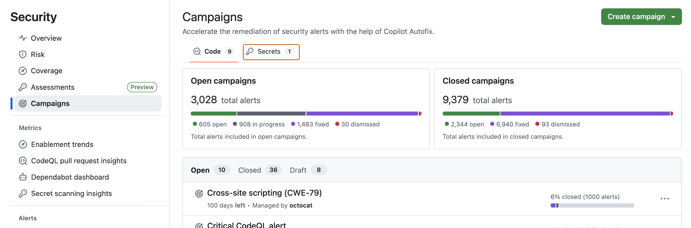
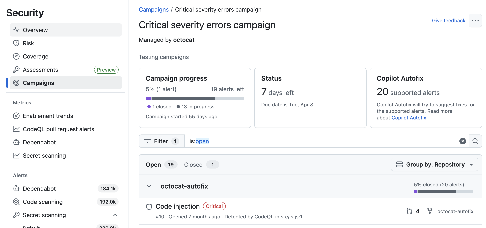

Use the campaign tracking views to monitor remediation progress, identify stalled work, and measure campaign impact across your organization.
Note
Campaigns for secret scanning alerts are currently in public preview and are subject to change.
The tracking view helps you quickly assess the health of your organization’s campaigns. You can use it to identify campaigns with a high number of open alerts, check whether work has started, and determine whether campaigns are on track to meet their due dates.
To display the campaign tracking view, navigate to the Security and quality tab for the organization, then in the left sidebar click Campaigns. To display campaigns for secrets, click the Secrets tab at the top of the page.

The tracking view shows you a summary of "Open" and "Closed" campaigns, with the total alert count across all campaigns of that type. The view breaks down the total alert count into the following alert statuses:
Review the proportion of alerts in each status to understand where action is needed. A high number of Open alerts may indicate that remediation has not yet started, while a low number of In progress alerts could signal that teams need additional guidance or prioritization.
You can similarly track how a single campaign is progressing by viewing the campaign's own tracking page.
To display the tracking page for a campaign, navigate to the "Campaigns" page, select Code or Secrets campaigns, and then select the campaign you want to view from the list of campaigns.

The tracking view for a single campaign helps you evaluate whether remediation is progressing as expected and whether additional follow-up is required.
The following indicators help you evaluate whether remediation is progressing as expected and whether additional follow-up is required.
For example, if many alerts remain open as the due date approaches, you may need to follow up with repository owners or adjust the campaign timeline.
You can also explore campaign repositories and alerts to identify which teams are actively addressing alerts and which may need follow-up.
You can filter both of these views to focus on a subset of repositories or alerts. For code campaigns, any alerts that are in progress are listed first.